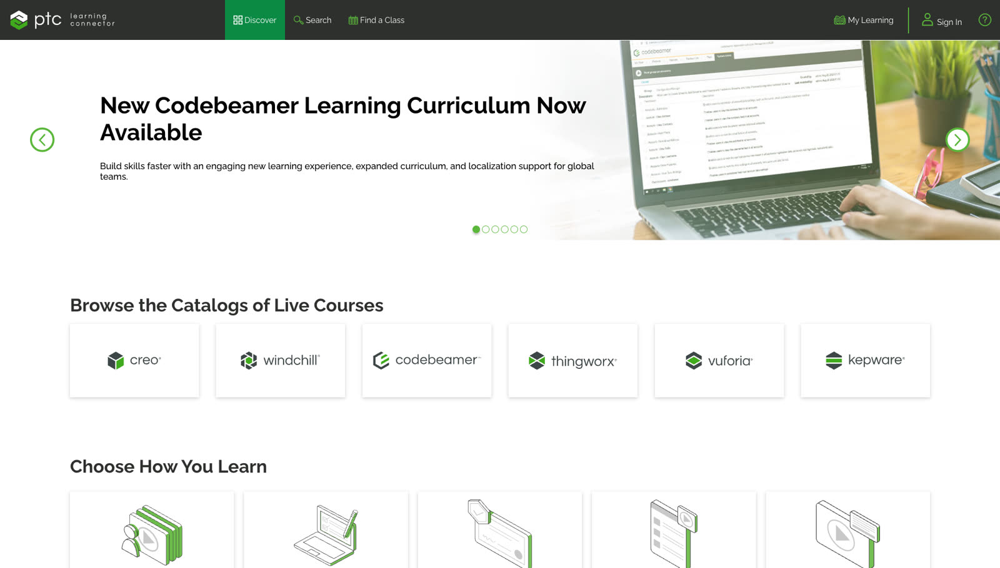

Before you redesign the screens, check whether the contract underneath them is the thing that’s broken.
The redesign took a quarter. What follows is the year — the evidence that convicted the contract, the four sunsets, and the two misses written down.
One decision · and everything it took to make it
The stakes: five platforms, no recurring revenue, and a brief pointed at the wrong culprit.
PTC sold its software on perpetual licenses: pay once, own forever. Around it sat five learning platforms — Learning Connector, LearningExchange, Precision LMS, Digital Guides, IoTU — five URLs, five logins, five lines on an invoice. Of 550k+ registered learners, only 350k+ ever came back. The official metric counted the gap and never asked why. And these weren’t hobbyists drifting off — the learners were working engineers at NASA, Boeing, Toyota, Airbus and Apple, companies whose products don’t tolerate half-trained hands. When 200,000 of them stop showing up, that’s not a churn statistic; it’s a verdict.
I spent three weeks inside the customer-success call recordings. Nothing was wrong with the navigation. Perpetual licenses meant no recurring revenue. No recurring revenue meant stale content. Stale content meant engineers learned on YouTube instead.
That was the fork. I could ship the redesign the brief asked for, or argue that the perpetual-license contract underneath all 5 platforms was the thing actually failing — and that no amount of cleaner navigation would fix a product nobody had a reason to come back to.
The test: if the contract is the culprit, a beautiful redesign should change nothing.
The move in the brief was a cleaner skin over the same five products on perpetual licenses. It would have looked successful in a portfolio and changed nothing — a prettier version of the thing already leaving 200k+ of its registered learners inactive and pricing itself out of recurring revenue.
So the real deliverable was never a screen. It was a political argument for killing 4 products and rewriting the contract as a subscription — with the screens built to back it up.
The mechanism: subscription-shaped design — every screen an argument for the new contract.
The CRO had all of the revenue — 100% — sitting on perpetual licenses and said so loudly. I took the phased version to the President of PTC University, who backed it: new customers on annual subscription from Q3 2017, existing ones protected for 24 months, then migrated. The redesign took a quarter. The argument took a year.
The call was the start of the job. I defined what Learning Connector was and owned its quarterly roadmap from 2016 to 2019 — and ran the consolidation it existed to deliver. 150,000 active learners moved onto the single platform over 24 months, history intact; the first switch-off alone took six months of migration paths and soft landings before the portal went dark. Killing a product an executive sponsors isn’t a deliverable — it’s a roadmap you own out loud while the people whose platforms are dying watch you do it.
Keep the quote to one line — 'Perpetual was 100% of revenue when I started; twelve months on, 64% of new bookings were subscription.' — and move the grandfathered-cohort and pricing-stayed-with-leadership sentences into the body paragraph above it.
Context for the bet: PTC’s company-wide move off perpetual licenses is documented as one of the industry’s smoothest — no revenue dip after the 2015 launch, where Autodesk’s transition dipped sharply. The University’s 0 → 64% ran inside that larger shift; the corporate numbers are PTC’s, not mine.
Every screen after that earned its place by making the subscription case real — the funnel below is the pitch, 0% to 64% of new bookings:

One login, or no login. With four engineers and one PM, I shipped single sign-on across all five platforms in 14 weeks and rebuilt the IA as a graph, not a tree — a learner on Precision LMS now saw “engineers like you also learned on IoTU” without leaving the surface. Cross-traffic became the biggest acquisition channel the under-used platforms ever had.
Nobody searches the way marketing writes. The catalogue mirrored the release calendar — “Precision LMS 5.0 — New Features.” Engineers think in problems, not version numbers. I lost that review twice and won the third with the search-query log from logged-out users: every query was problem-shaped, zero were feature-shaped. Enrollment rose 28% the quarter after launch, against the prior four-quarter rolling baseline.
Two learners live inside every engineer. One says “I need to figure this out now” — mid-task, tool open, twenty minutes at most. The other says “I want to invest in skills” — a deliberate two-hour commitment. The old platforms served only the second, then wondered why daily engagement was low. The rebuild served both: micro-learning findable by typing the problem, macro-learning found by recommendation. Micro brought engineers back daily; macro was what their companies renewed for. Free tutorials did the convincing, the subscription was the upgrade they’d earned — the “continuous value” argument stood on that loop.
Every query was problem-shaped. Zero were feature-shaped. I lost that review twice — the query log from logged-out users won the third.
A user guide with a shipping cost. Every product shipped with a 200-page printed manual — printing, freight and warehousing cost PTC roughly $1M a year, and locked the content to a release cycle. I led the digital guidebook that replaced it: print volume fell 92% in year one, the $1M became recurring savings against the 2016 print budget, and the guide became a living surface tied to the subscription.
Translation was an architecture decision. I built the IA knowing German runs ~30% longer than English — short labels, shallow hierarchy, no text baked into images, width buffers. Eleven locales, each WCAG AA, with manual screen-reader and keyboard testing per language. And the platform was made responsive — mobile was 4% of sessions when we started, and once the redesign met people on the 3G handsets engineers in emerging markets actually carried, mobile became a real channel. The growth outlived my tenure; I don’t quote an endpoint I can’t stand behind.

What the research found: nobody used our product names.
The homepage wasn’t decided by taste. I ran research studies and usability testing with customers, and one pattern kept repeating: people didn’t recognise the offerings by their individual product names. They called all of it, collectively, “PTC University.”
That finding drove two decisions at once. The five properties consolidated under the one name customers already used — PTC University became the single front door instead of five product-branded sites. And the homepage was personalised, keyed to the license: each visitor saw what their company had actually bought, with everything else behind one “Explore” link — because a page organised by product names nobody recognised was a page organised for us, not for them.
Everything else folds behind one link → Explore
The users had already renamed the product. The research just gave us permission to catch up.
The bet still carried a real cost: a 24-month grandfather promise to existing customers that I couldn’t walk back. I priced that in on purpose — a homepage you can revise; a redesign that quietly preserves a naming system customers don’t use, you can’t.
The miss. Written down, as promised.
On the accessibility work, my first pass was textbook-diligent and wrong. I loaded the interface with ARIA labels — the descriptive text screen readers speak aloud — on everything, long and thorough, convinced more description meant more help. Then I ran a usability study with about ten visually-impaired users and watched my diligence fail: they don’t listen through sentences. They skim — jumping by headings and landmarks at speed, the way sighted users scan a page — and my verbose labels were slowing down exactly the people they were built to serve.
The fix started with admitting I’d designed from imagination instead of experience. I switched my monitor off and spent a week navigating the system by screen reader alone — then re-did the front-end code with what that week taught me: terse labels, honest landmarks, headings that carry the structure. The second pass worked because the first one had failed in front of me.
And a second miss, this one caught by a customer after launch. The learning platform ran multiple-choice assessments, and Toyota used engineering design images beside the questions as supporting detail. Reasoning that engineers would need to inspect design detail properly, I replaced the inline image with a small thumbnail that enlarged on click. Toyota came back with the problem: enlarging the image and then closing it again to re-read the question broke the pace and timing of the assessment. I had optimised for inspection and taxed the actual task. The fix was to put a large image back beside the question and keep full-screen zoom as an option on top of it — detail available without making anyone leave the question to get it.
It’s the cheapest lesson on this page and the one I’ve reused most: empathy claimed is a slide; empathy earned changes the code. Every “loop ends in front of a user” rule in my process traces back to this miss.
Falsifiable evidence — public numbers, miss included.
Every number with baseline + window

Where this wouldn’t transfer
This worked because of two advantages: a full year of runway, and the executives who owned the revenue sitting in the room. Take away either one — try to make the same case in a single quarter, or without those executives listening — and it fails. Good design was necessary here, but the time and the access are what made it win.
Where the principle breaks.
The contract question needs standing to ask it — I had a year of research receipts and an executive sponsor before naming the business model as the defect. Ask it in week one, with no evidence, and you’re not a strategist, you’re a designer refusing the brief. It also doesn’t apply where the model is genuinely healthy: sometimes navigation really is the culprit, and reaching for the strategic reframe becomes its own kind of costume. The check I run — “who pays for this, and does paying make them use it?” — earns the right to the bigger conversation only when the answer is damning.
This is the kind of problem I solve full-time.
If your product has a gap between a right answer and an acted-on one, let’s talk — 30 minutes, no pitch.
Book 30 minutes (opens in a new tab)Arpit has worked with me for years and I value his honesty and hard work. He’s been an integral part of my staff… involved in all facets of the team, from design to development to hiring and onboarding of new members.
I write about this in my newsletter ↗ (opens in a new tab)
Five platforms became one, and the business model followed. Next: the same discipline with no model in the room — reward screens I drew and coded myself, for four million people.